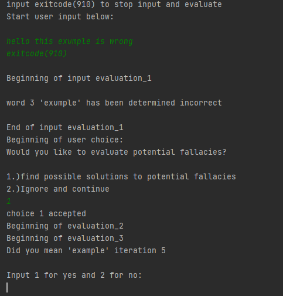

User Experience
Upon running the program, the user will be presented two cards and four choices. The user can then enter 1-4 depending on their choice. An input of 1 indicating a Call, 2 to raise, 3 to fold, and 4 to leave the game and exit the program. If anything else is given as input it will default to a call.

After choosing the method of input, the user will be prompted on whether they would like to check for potential errors or simply ignore and continue. Choosing to ignore and continue will not do anything and will simply disregard your input. If you choose to check for potential fallacies you will be prompted with ten potential solutions to words that the software deemed potentially incorrect. The user will be prompted to enter a 1, if the solution was the correct choice; or 2, if suggested solution was incorrect. If no solution was found, no changes will be made; if a solution was found, you can choose to save these changes to a text file of your desired directory.
How I did it
I started by downloading a .txt file of all the words of the english language within my project's directory. Because each word was on its own line within the .txt file, I could easily copy each word from the .txt file into a set of two map data structures. The first map structure consists of a character key which returns an arrayList of all the words which start with that character. The second map structure takes an integer key and returns an arrayList of all the words that are the same length as that integer key. Regardless of whether the user chooses to input via terminal or .txt file, the input gets added to an arrayList that will then be evaluated for any fallacies.
.png)
The evaluation will then check for every user input stored in the arrayList, to see if a match can be found within the first map structure using the user input's first character. If a match is found then the user input will not be returned via an arrayList named fallacyList. I then use this fallacyList to try to find potential solutions via the second map structure (the key being the length of that particular fallacy). The program then retrieves 7 arrayList's which contain correct english words (to find a potential solution), going off of the size of that particular fallacyList element. I will then determine how many characters in common the fallacyList element has with the potential solution list's elements. I will then return the an ArrayList of the ten correct words (potential solutions) that had the most congruent characters with the fallacyList element. the user will then be prompted to determine if any of the potential solutions are in fact correct. The user can then decide to write these new solutions to a new save file or disregard the changes made.
.png)